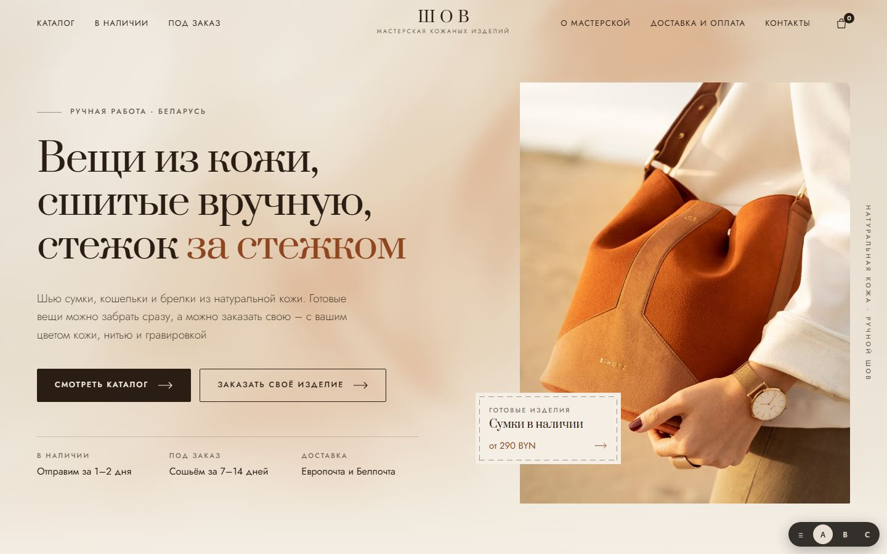
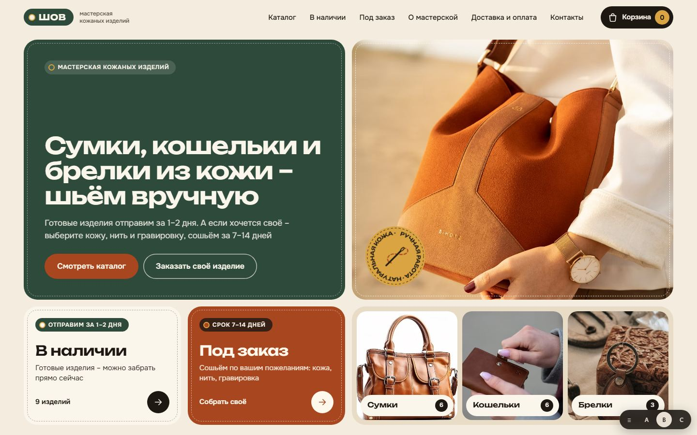
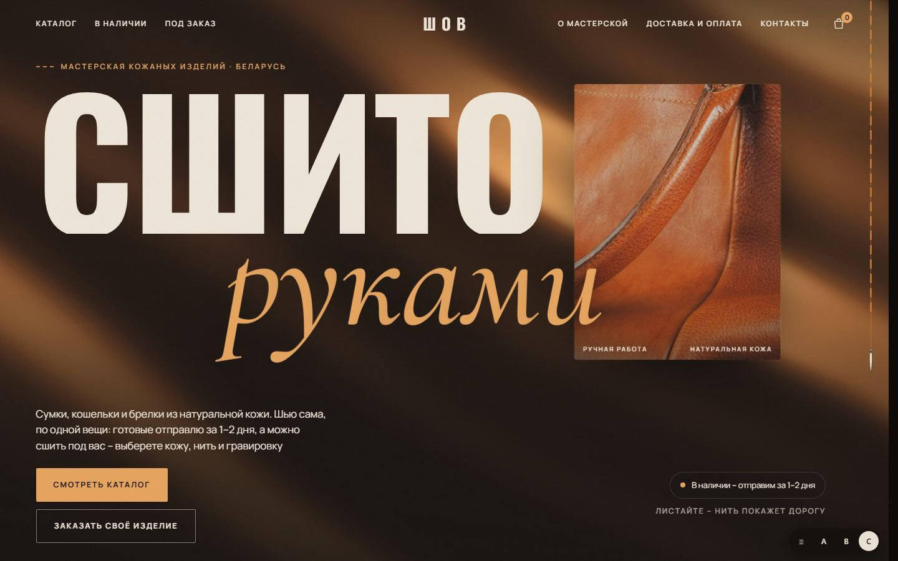

A

Красивая и современная
Светлая журнальная вёрстка, много воздуха, спокойная подача. Сайт как каталог небольшого ателье
Открыть вариант AB

Удобная и креативная
Выбор «в наличии или под заказ» прямо на первом экране, фильтры каталога и мини-конструктор своего изделия
Открыть вариант BC

WOW
Тёмная кинематографичная страница: нить прошивает сайт по мере прокрутки, живая фактура кожи, галерея-лента
Открыть вариант C